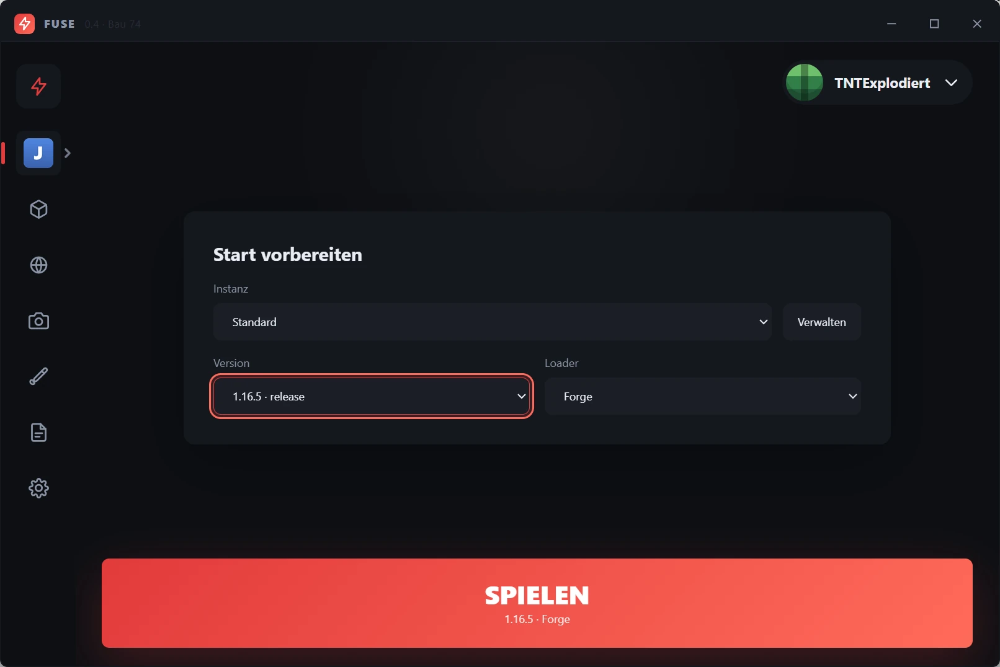
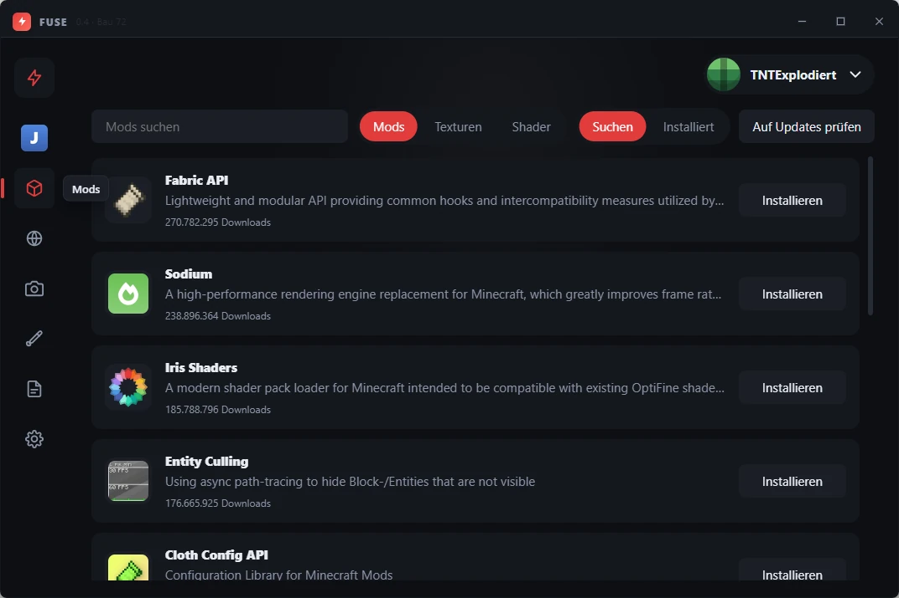
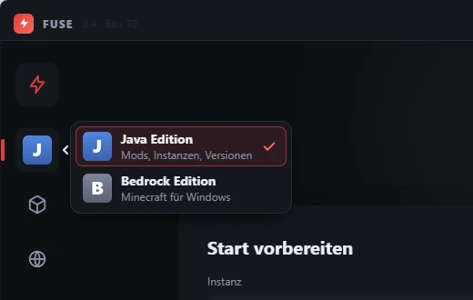

Fabric API
Die Grundlage, die fast jede Fabric-Mod braucht.
Minecraft-Launcher für Windows
Version wählen, Loader wählen, SPIELEN drücken. Minecraft, Java und Loader holt FUSE selbst – und Mods suchst du dir direkt bei Modrinth aus.
Windows 10/11 · kostenlos · von TNTExplodiert
Nicht offiziell. Nicht von Mojang oder Microsoft.
Live-Vorschau
Klick dich links durch die Bereiche von FUSE – alles mit Beispieldaten, gestartet oder geladen wird hier nichts.
Zum Durchklicken öffne die Seite auf einem Tablet oder PC – hier ein echtes Bild von FUSE.
Beispieldaten – nur zum Anschauen
Spieler
Installiert
FUSE startet Bedrock über Windows – mehr nicht. Updates, Mods und ältere Versionen gibt es bei Bedrock nur über den Microsoft Store, nicht über FUSE.
Die Grundlage, die fast jede Fabric-Mod braucht.
Macht Minecraft deutlich flüssiger – mehr FPS.
Damit laufen Shader-Pakete – passt zu Sodium.
Zeichnet nur, was du wirklich sehen kannst.
Einstellungs-Bildschirme für andere Mods.
Zeigt im Spiel alle Mods und ihre Einstellungen.
Die bekannten Texturen, nur doppelt so scharf.
Tiere und Monster bewegen sich lebendiger.
Natürlichere Blöcke, nah am Original.
Liegt im Ordner, nicht von FUSE geladen
Warmes Licht, schöne Wolken und Wasser.
Klassischer Look mit weichem Licht.
Leichte Shader, laufen auch auf schwachen PCs.
Vanilla lädt keine Mods
Stell bei Spielen den Loader auf Fabric, Quilt, Forge oder NeoForge – dann kannst du hier suchen und installieren.
[INFO] (launcher) [18:30:02] FUSE gestartet
[INFO] (launcher) [18:30:41] Instanz „Standard“: 1.21.8 · Fabric
[INFO] (java) [18:30:42] Java 21 ist schon da
[INFO] (backup) [18:31:05] Welten gesichert: 2 Welten, 96,8 MB
[INFO] (spiel) [18:31:12] Minecraft läuft
[WARNUNG] (mods) [18:52:12] Auf Updates geprüft: Für Fresh Animations (Texturen) gibt es eine neuere Fassung
[FEHLER] (modrinth) [18:52:40] Modrinth hat nicht geantwortet – später noch mal versuchen
[INFO] (spiel) [19:14:09] Minecraft beendet
Noch nichts passiert.
4,0 GB für Minecraft · 16,0 GB hat der Rechner
Spielfenster
Vor jedem Start eine gepackte Kopie deiner Welten – nur, wenn sich seit dem letzten Backup etwas geändert hat.
Dann musst du dich nach einem Neustart nicht neu bei Microsoft anmelden. Der Zugang liegt verschlüsselt auf deinem PC – auf einem geteilten PC lieber aus lassen.
Schaltet Snapshots und die alten Alpha- und Beta-Fassungen in der Versionsliste frei.
⚠ Snapshots sind Testfassungen. Eine Welt, die einmal mit einem Snapshot geöffnet wurde, lässt sich oft nicht mehr mit der normalen Version spielen.
Neue Fassungen lädt FUSE von allein – eingespielt werden sie erst, wenn du FUSE schließt.
Ohne JavaScript zeigt die Vorschau nur den Bereich „Spielen“. Mit JavaScript kannst du links alle Bereiche anklicken.
Nachgebaut für diese Seite, mit Beispieldaten. Echte Bilder aus FUSE: Einmal reingeschaut.

Funktionen
Alles hier steckt schon im aktuellen Download – nichts davon ist nur geplant.
Fabric, Quilt, Forge und NeoForge – oder ganz ohne (Vanilla). FUSE lädt Minecraft und richtet den Loader selbst ein.
Forge für 1.12.2 und älter sowie von 1.13.2 bis zu den 26er-Versionen, NeoForge ab 1.20.2.
Melde dich mit dem Microsoft-Konto an, auf dem du Minecraft: Java Edition hast – ganz normal über deinen Browser. Mehrere Konten gehen auch, und auf Wunsch bleibst du angemeldet.
Hat ein Konto kein Minecraft, sagt FUSE dir das deutlich. Ohne Konto geht nur Einzelspieler und LAN – FUSE ersetzt keinen Minecraft-Kauf.
Du musst kein Java installieren. FUSE holt für jede Minecraft-Version genau das Java, das sie braucht.
Mods, Texturenpakete und Shader direkt in FUSE suchen und installieren – mit Bildern, Beschreibungen und Updates auf Knopfdruck. Einzelne Mods kannst du auch einfach ausschalten.
Updates gibt es auch für Texturen und Shader – ein aktives Texturpaket oder ein gewählter Shader bleibt danach ausgewählt.
Jede Version hat mit jedem Loader ihren eigenen Mod-Ordner. Wechselst du zwischen 1.20.1 und 1.21, kommen sich die Mods nicht in die Quere.
Eigene Welten, Mods und Einstellungen pro Instanz. Spieldateien und Java teilen sich alle – das spart Platz. Instanzen lassen sich auch duplizieren.
Welten, Server und Screenshots auf einen Blick. Vor dem Start sichert FUSE deine Welten automatisch, wenn sich etwas geändert hat. Ab 1.20 geht’s mit einem Klick direkt in eine Welt.
Fabric-Modpacks direkt bei Modrinth suchen oder eine .mrpack-Datei öffnen – FUSE macht daraus eine neue Instanz.
Alle Release-Versionen stehen in der Liste. Im Experimental Mode kommen Snapshots und die alten Alpha- und Beta-Versionen dazu.
In den Einstellungen Niedrig, Mittel oder Hoch wählen und anwenden – FUSE stellt die Grafik der Instanz passend ein. Deine Tasten und die Lautstärke bleiben, wie sie sind.
Ein Umschalter zwischen Java und Bedrock Edition. FUSE erkennt Bedrock und startet es über Windows – installieren oder modden kann FUSE Bedrock nicht.
Neue Versionen von FUSE kommen über GitHub. Einmal in den Einstellungen die Quelle eintragen (siehe unten) – dann holt FUSE Updates selbst und spielt sie beim Schließen ein.
Einblick
Suchen, auf Installieren drücken, fertig. Unter Installiert siehst du deine Mods mit echtem Namen und Bild – und kannst sie dort aus- und wieder einschalten. Texturen und Shader haben dieselbe Ansicht, mit Entfernen und „Auf Updates prüfen“.


Noch ein Klick aufs Spiel-Symbol öffnet das Editions-Menü. Bei Java hast du Mods, Instanzen und Versionen; Bedrock startet FUSE einfach über Windows.

Ehrlich gesagt
Damit du nicht enttäuscht bist:
Modpacks gehen bisher nur mit Fabric. Einzelne Mods für Forge, NeoForge und Quilt gehen schon.
FUSE startet Bedrock nur. Installieren und Mods gibt es nur für die Java Edition.
Anleitung
Vier Schritte, dann bist du im Spiel.
Auf Herunterladen klicken – dann lädt dein Browser direkt die neueste FUSE.zip. (Ältere Fassungen findest du auf der GitHub-Seite.)
Rechtsklick auf die Zip dann Alle extrahieren …. Wichtig: erst entpacken, nicht direkt in der Zip starten.
Im entpackten Ordner FUSELauncher.exe doppelklicken und Mit Microsoft anmelden drücken – dein Browser geht auf. Nimm das Konto, auf dem dein Minecraft ist.
Version und Loader wählen, SPIELEN drücken. Beim ersten Start einer Version lädt FUSE Minecraft und Java – das kann ein paar Minuten dauern.